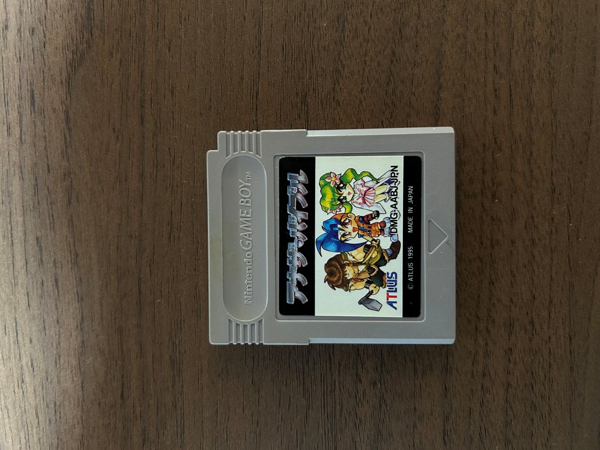
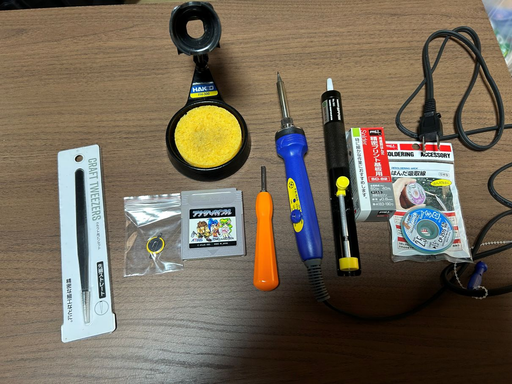
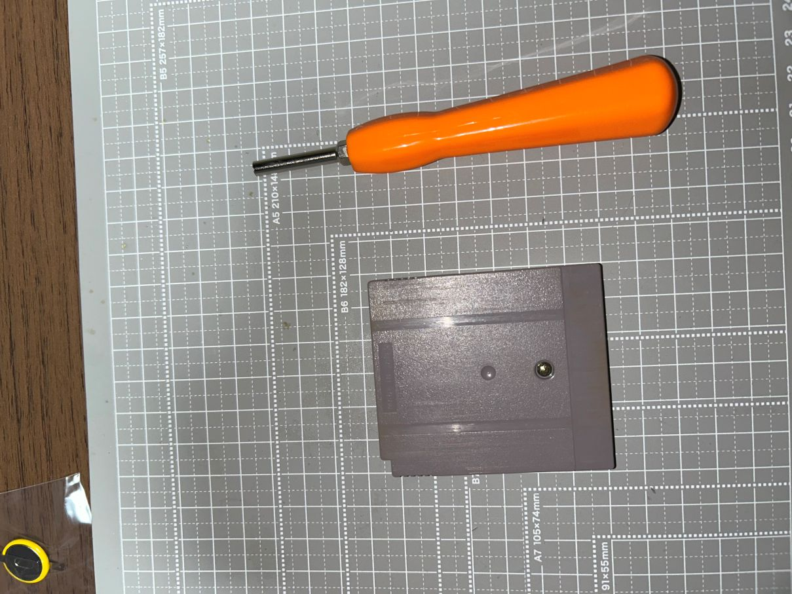
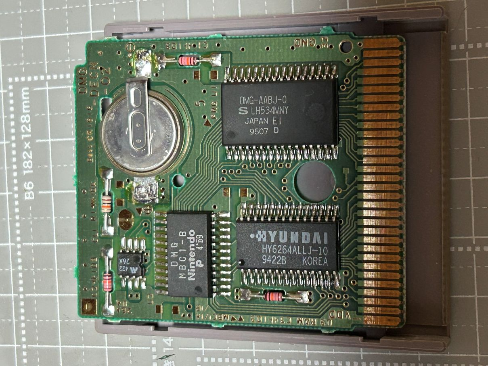
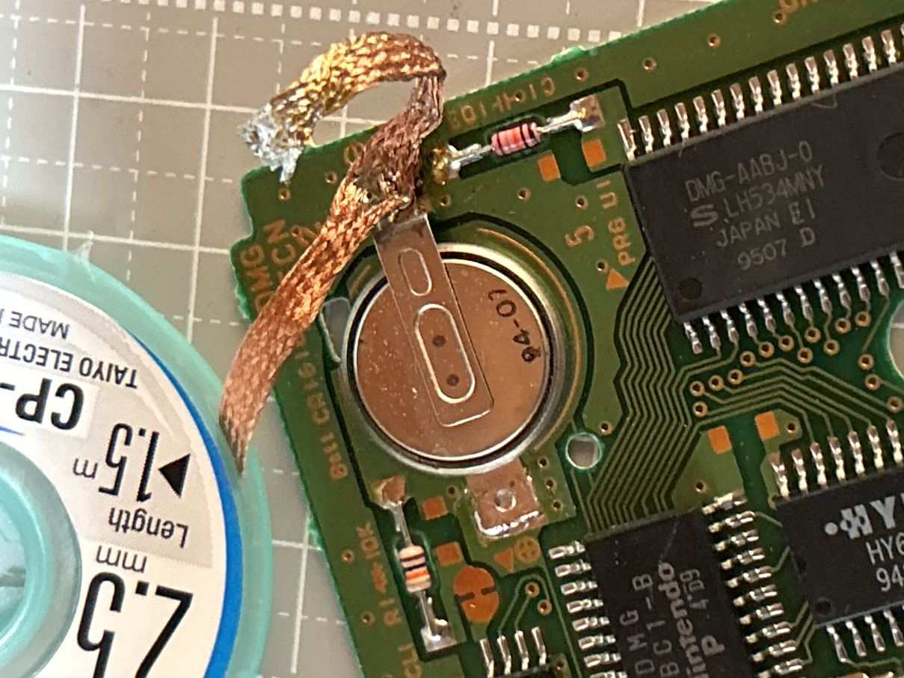
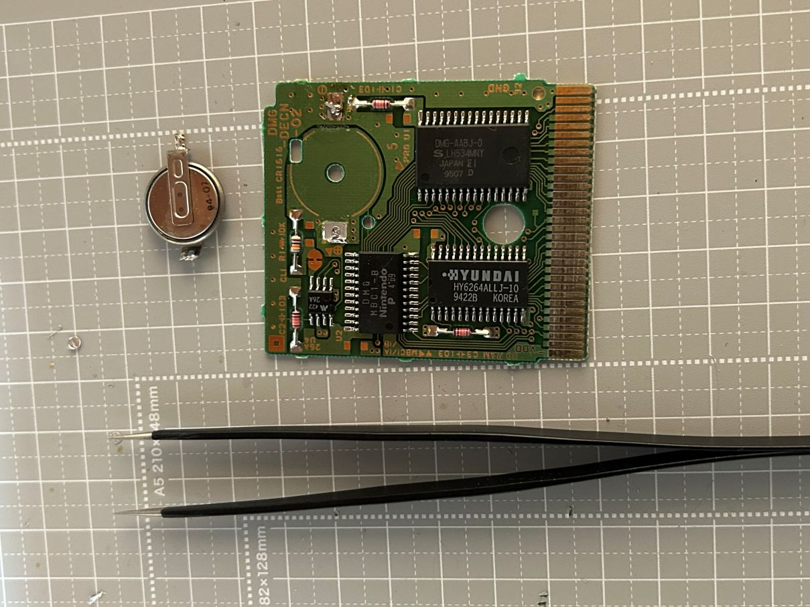
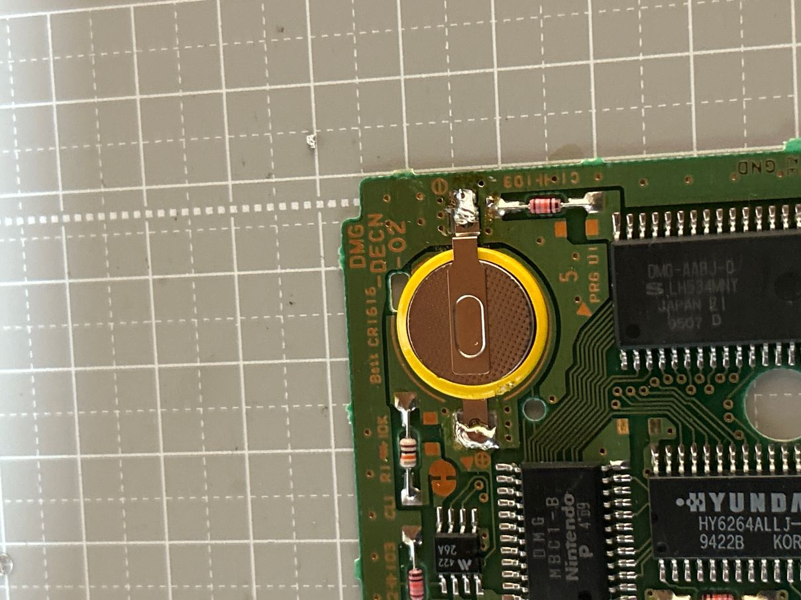
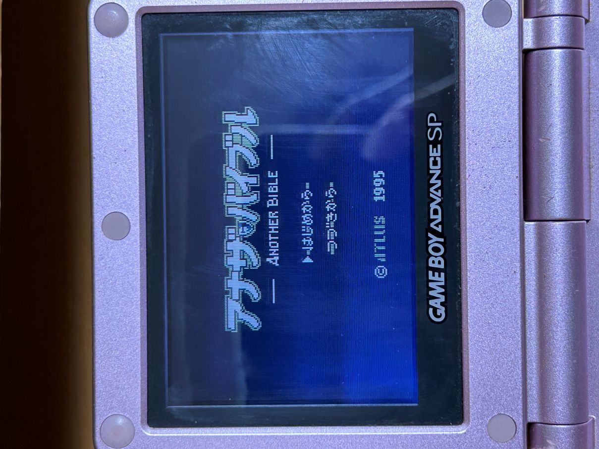
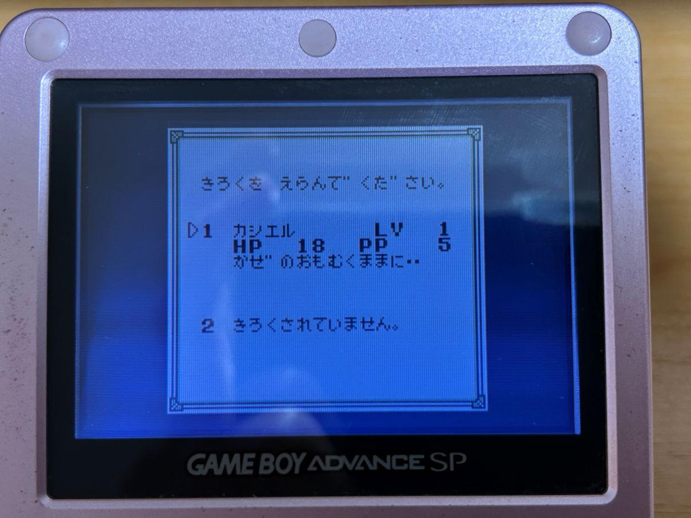

今回のソフトについて
今回は、ゲームボーイソフト『アナザ・バイブル』です。
以前、少し遠くのお店に行ったときに見かけて買ったもので、ATLUSのシミュレーションRPGです。
アトラスのゲームでプレイしたことがあるのはDSの『真・女神転生 ストレンジジャーニー』とGBAの『デビルチルドレン』くらいだったので、
「アトラスのシミュレーションRPGって珍しいな」と思い購入しました。

ソフトの状態について
今回はジャンク品ではなく中古での購入だったので、起動自体は問題ありませんでした。
ただ、バックアップ用ボタン電池が切れていたようでセーブができなかったため、電池交換を行うことにしました。
準備したもの
今回の作業で用意したものは、
ピンセット / タブ付きCR1616ボタン電池 / ゲームソフト / 特殊ドライバー / はんだごて / はんだ吸い取り器 / はんだ / はんだ吸い取り線
です。

はんだ吸い取り器とは別に、はんだ吸い取り線も用意しています。
これは「電池のタブ周辺に部品が多く、はんだ吸い取り器だけではやりづらそう」と判断したためです。
分解と古い電池の状態確認
まずは特殊ドライバーを使ってカセットのネジを外し、カバーを開けます。

バックアップ用ボタン電池は基板の右上に取り付けられています。
スーパーファミコンのソフトと違い、右側のタブが別の部品と近いので、少し気を付けながら外していきます。

旧電池の取り外し
まずは、古いボタン電池を外していきます。
今回は「はんだ吸い取り線」を初めて使ってみたのですが、ここで少し問題が発生しました。
普段ははんだ吸い取り器を使っていることもあり、はんだ吸い取り線の使い方に慣れていなかったことで、
電池のタブ部分に残ったはんだと、はんだ吸い取り線がくっついてしまいました。

幸い、少しだけはんだを追加して周辺のはんだを溶かし直すことで、 くっついてしまった吸い取り線をなんとか外すことができました。
このあとはやり方を変えて、タブの部分にはんだを少し乗せてから溶かし、
はんだが溶けている間にピンセットでタブを持ち上げる方法で、両方のタブを外しました。

新しい電池の取り付け
ここから先は比較的シンプルで、古い電池を外したら、
タブ付きの新品ボタン電池のプラス極とマイナス極の向きを確認したうえで、元の位置に乗せてはんだ付けしていきます。
まず片側のタブを軽くはんだ付けして仮固定し、位置がずれていないか確認してから、
もう片方のタブもしっかり固定しました。
しいて言うなら、タブの位置がずれないようにはんだ付けするのが少し大変だったくらいです。

起動確認とセーブ確認
電池の取り付けが終わったら、基板を元通りカセットのケースに戻し、ネジを締め直します。
その後、ゲームボーイ本体にセットして起動確認を行いました。

続いて新しいセーブデータを作成して電源を切り、再度起動してセーブデータが残っているかをチェックしました。
問題なくセーブデータが残っていたので、今回の電池交換は無事完了です。

おわりに
今回は、前回の『魔法陣グルグル』とは逆で、端子清掃ではなく電池交換のみの作業になりました。
電池のタブ部分と他の部品との距離が近かったため、念のためはんだ吸い取り線も用意しましたが、
実際にやってみると、ゲームボーイやスーパーファミコンの電池交換程度であれば、
はんだ吸い取り器だけでも十分対応できそうだと感じました。
次回の電池交換を行うころにはフラックスも手元に届いていると思うので、 そのときにはフラックスを使った場合の感想などもあわせて書ければと思います。
もし、この投稿を見て電池交換をやってみようと思った方がいれば、
タブ付きボタン電池のタブ形状を間違えないことや、必要な道具を事前に揃えておくこと、
ピンセットがあると作業が楽になることなどを意識しておくと、より安全に作業できると思います。
具体的には、はんだ・はんだごて・はんだ吸い取り器（またははんだ吸い取り線）・特殊ドライバーは必要になります。
ピンセットはボタン電池を外すときなどにあると便利なので、個人的におすすめです。
それではこのあたりで。閲覧ありがとうございました。
なお、この記事を参考にして作業をされる場合は、あくまで自己責任でお願いいたします。
【掲載しているゲーム画面について】
本記事では、起動確認およびセーブ確認として『アナザ・バイブル』の画面を一部掲載しています。
ゲーム画面・作品名・各種権利は、各権利者に帰属します。
『アナザ・バイブル』© ATLUS 1995
最終更新日：2026/05/20